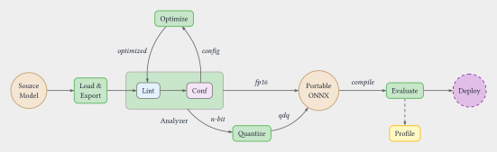

How winml-cli Works¶
winml-cli is a toolkit for converting PyTorch and Hugging Face models into ONNX artifacts
that are optimized and compiled for Windows ML execution providers (EPs). Starting from a
model identifier or a pre-exported ONNX file, winml-cli runs a staged pipeline — export,
optimize, quantize, compile — and produces a final model.onnx ready for inference via
a Windows ML session.
Each stage is independently controllable. Quantization and compilation are optional and
can be bypassed with a flag or by leaving the corresponding section of the build
configuration empty. The same pipeline API that powers winml build is also the
programmatic entry point for WinMLAutoModel.from_pretrained().
The Pipeline at a Glance¶

The stages run in order, and each one writes an intermediate ONNX file to the output directory. All intermediate artifacts are preserved so you can inspect any stage's output or feed a pre-processed file into a later stage directly.
Pipeline Stages¶
Export — winml export¶
winml export loads a Hugging Face model (pretrained or random-weight), traces it with
torch.export or an Optimum-based exporter, and writes a portable, device-agnostic ONNX
file. The output at this stage is a plain ONNX graph with float32 weights and no
EP-specific nodes.
Analyze — winml analyze¶
winml analyze performs static compatibility analysis on an ONNX graph against a target
execution provider. It classifies every node as Supported, Partial, Unsupported, or
Unknown — without running the model on the device. Use it before building to check if
your model (or an intermediate artifact from any pipeline stage) will run cleanly on the
target EP:
Add --optim-config optim.json to output auto-discovered optimization recommendations
that can be fed directly into winml optimize. The same analyzer also drives the
autoconf feedback loop inside winml build.
Optimize — winml optimize¶
winml optimize runs graph-level transformations on the exported ONNX: operator fusion
(attention, layer norm, GeLU), constant folding, and graph pruning. The optimize stage
also contains an autoconf loop: a static analyzer inspects the graph for nodes that the
target EP cannot dispatch natively, and re-runs optimization with adjusted fusion flags
until no further improvements are found (up to a configurable iteration limit).
Quantize — winml quantize¶
winml quantize inserts Quantize-Dequantize (QDQ) nodes into the optimized graph to
reduce weights and activations to lower-precision types (for example, int8 weights with
uint8 activations). Calibration data is used to compute quantization parameters per
tensor. If the input model already contains QDQ nodes, this stage is skipped
automatically.
Compile — winml compile¶
winml compile invokes an EP-specific compiler (for example, the QNN compiler for NPU
targets) to embed a pre-compiled binary cache inside the ONNX graph as an EPContext node.
At inference time, the EP loads the cached binary directly, bypassing per-session
compilation. Compilation is optional; omitting it produces a portable ONNX that is
compiled on first load by the runtime.
Perf and Eval — winml perf / winml eval¶
After the model is built, winml perf benchmarks inference latency and throughput using
a Windows ML session, and winml eval runs task-specific accuracy evaluation. Neither
command modifies the model; they consume the final model.onnx produced by the pipeline.
winml build as the One-Shot Wrapper¶
Running each stage individually is useful when iterating on a specific step, but the
normal workflow is winml build, which orchestrates the full pipeline in a single
command:
The -c config.json flag is optional. If omitted, winml build auto-generates a
default config internally. To customize pipeline settings, generate a config first
with winml config and then pass it:
winml config -m microsoft/resnet-50 -o config.json
winml build -c config.json -m microsoft/resnet-50 -o output/
winml build auto-detects whether the input is a Hugging Face model ID or an existing
ONNX file and calls the appropriate internal API (build_hf_model or build_onnx_model).
When given an ONNX file directly, the export stage is skipped and the pipeline starts at
optimize.
Individual stages can be bypassed from the command line without editing the config file:
# Skip quantization and compilation
winml build -m bert-base-uncased -o output/ --no-quant --no-compile
# Skip optimization (for pre-quantized input)
winml build -m model_qdq.onnx -o output/ --no-optimize
Configuration: WinMLBuildConfig vs CLI Flags¶
Pipeline behavior is primarily governed by a WinMLBuildConfig JSON file generated by
winml config. The config is a hierarchical structure with one section per stage:
WinMLBuildConfig
├── loader — model type, task, input constraints
├── export — input tensor specs, opset, backend
├── optim — fusion flags, optimization level
├── quant — precision, calibration settings (null = skip stage)
├── compile — target EP, device (null = skip stage)
└── eval — evaluation settings
Setting quant or compile to null in the JSON file is equivalent to passing
--no-quant or --no-compile on the command line; both result in the corresponding
stage being skipped. CLI flags override the config at runtime without modifying the file,
which is convenient for one-off experiments.
The config file is written (or updated) to the output directory after the optimize stage
completes, capturing any autoconf-adjusted fusion flags so the build is reproducible.
This persisted winml_build_config.json is a self-contained pipeline specification that
you can check into version control and run in CI/CD (winml build -c winml_build_config.json -m <model> -o output/) for repeatable, unattended builds across environments.
For the full field-by-field schema, see Reference — Config Schema.
See Also¶
- winml build — full reference for the build command
- winml export — export command reference
- ONNX and Execution Providers — background on EPs and the ONNX runtime
- Config and build — detailed field-by-field config documentation